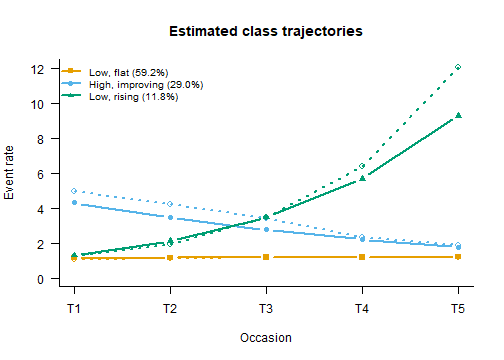

Count Trajectories: Poisson, Zero-Inflated and Negative Binomial LCGA
Source:vignettes/count_trajectories.Rmd
count_trajectories.RmdMany outcomes followed over time are counts: days absent, drinks per
week, arrests per year, visits to a doctor. A latent class growth
analysis (LCGA) of a count looks for groups of cases that share a
trajectory in the rate of the event, on the log scale, the way
Nagin’s group-based trajectory model does (Nagin & Land, 1993;
Nagin, 1999). fit_lcga() offers three distributions for the
count within a class, and the choice between them is the first decision
of the analysis, made before the number of classes. This vignette is
about that decision. What an LCGA is, and how it differs from a growth
mixture model, is in vignette("growth_mixture").
The data: absences over five school terms
The example is simulated, so that the right answer is known. One thousand students are followed over five terms; each term records how many days the student was absent. Three groups are built in: most students (60%) miss about one day a term throughout, a second group (28%) starts high and improves, and a small third group (12%) starts low and climbs steeply. Within each group the counts vary far more than a Poisson count would, which is what real absence data do: some students in the same group are hardly ever away and others miss a week at a time. One answer in twenty is missing, as if a term’s register had been lost at random.
set.seed(2070)
n <- 1000
term <- 0:4
class <- sample(1:3, n, replace = TRUE, prob = c(0.60, 0.28, 0.12))
intercept <- c(0.2, 1.5, 0.4)[class] # log of the expected count at term 1
slope <- c(0.0, -0.25, 0.40)[class] # change in the log count per term
mu <- exp(intercept + outer(slope, term))
absences <- matrix(rnbinom(n * 5, size = 1 / 0.7, mu = mu), n, 5,
dimnames = list(NULL, paste0("term", 1:5)))
absences[runif(n * 5) < 0.05] <- NA
head(absences)
#> term1 term2 term3 term4 term5
#> [1,] 1 3 0 1 0
#> [2,] 1 0 0 1 2
#> [3,] 1 1 1 1 0
#> [4,] 1 0 3 0 1
#> [5,] 1 3 1 2 0
#> [6,] 4 2 5 0 0The counts are drawn from a negative binomial with dispersion 0.7, so
within a group the variance is the mean plus 0.7 times the mean squared.
class is the truth the analysis will try to recover; a real
analysis never has it.
Look at the counts before choosing a model
round(rbind(mean = colMeans(absences, na.rm = TRUE),
variance = apply(absences, 2, var, na.rm = TRUE),
zeros = colMeans(absences == 0, na.rm = TRUE)), 2)
#> term1 term2 term3 term4 term5
#> mean 2.05 1.97 1.90 1.94 2.39
#> variance 8.89 6.25 5.29 7.13 17.89
#> zeros 0.33 0.32 0.32 0.32 0.35Two features stand out. The variance is between three and eight times the mean at every term, and about a third of all answers are zero. Neither is conclusive on its own, because a mixture of groups with different rates also has a variance above its mean. But a variance this far above the mean, with a third of the counts at zero while the mean is two, is what counts that vary within groups look like.
Choose the distribution first
The three families of fit_lcga() make three different
claims about a student within a trajectory group:
-
family = "poisson": the count’s variance equals its mean. Students in a group differ only by chance. -
family = "negbin": the variance is the mean plusalphatimes the mean squared (the NB2 form; Cameron & Trivedi, 2013, ch. 3). Students in a group differ in their own rates, by an amountalphameasures. Withalpha = 0it is the Poisson. -
family = "zip": some zeros are structural. A share of the group is not at risk at all (a student who is never absent, an adolescent who does not drink), and the rest follow a Poisson count (Lambert, 1992).
Which of these describes a group of students is a question about the
outcome, answered on substantive grounds and from plots like the table
above. It is not answered by comparing the families’ BIC. A model that
cannot represent the spread within groups can only represent it with
more groups, so its BIC keeps improving as classes are added, and lining
up the families’ BICs rewards the family that has spent the most classes
on the spread. In a simulation of growth mixtures, the lowest BIC across
families belonged to a one-class model of a symmetric family fitted to
skewed data (Guerra-Peña et al., 2020).
compare_longitudinal() therefore ranks the number of
classes within one family, and prints a fit from another family
in a block of its own, unranked.
For these data the case for the negative binomial is the variance: absence is not a coin that lands the same way for everyone in a group. The zeros are a separate question, taken up at the end.
Every fit below switches off the package’s default priors, which keep
estimates away from the boundary and are the right default for
exploratory work. Without them the fits are plain maximum likelihood,
the estimator the count models above are defined by;
vignette("estimation") explains what the priors add and
when to keep them.
ml <- list(latent = 0, categorical = 0, poisson = 0, variances = 0)How many classes: negative binomial
nb <- compare_longitudinal(absences, model = "lcga", times = 5,
k_range = 1:4, family = "negbin",
n_init = 50, random_state = 1,
bayes_constants = ml, verbose = FALSE)
nb
#>
#> === Model Selection Summary ===
#> Classes LL Params BIC SABIC AIC3 Entropy
#> 1 -9138.300 7 18324.954 18302.722 18297.600
#> 2 -9022.445 10 18113.968 18082.208 18074.891 0.662
#> 3 -8964.127 13 18018.055 17976.766 17967.254 0.573
#> 4 -8961.453 16 18033.431 17982.614 17970.906 0.625
#>
#> -> Best model according to BIC: 3 classes
#> print(x, columns = "all") adds AIC, CAIC, AWE, ICL, BF and cmP.BIC falls from one class to three and rises at four, and the
four-class log-likelihood is only 2.7 units above the three-class one
for three more parameters. Three classes it is, which is what was
simulated. The relative entropy of 0.57 says the classes overlap: with
this much spread within a group, a student’s five counts do not always
say which group they come from. That is a property of the data, not a
defect of the fit, and it is the reason the bias-adjusted three-step
methods exist when the classes are later related to other variables
(vignette("estimation")).
What the Poisson model does with the same counts
po <- compare_longitudinal(absences, model = "lcga", times = 5,
k_range = 1:4, family = "poisson",
n_init = 50, random_state = 1,
bayes_constants = ml, verbose = FALSE,
alongside = list(`negbin, 3 classes` = nb$models$K3))
po
#>
#> === Model Selection Summary ===
#> Classes LL Params BIC SABIC AIC3 Entropy
#> 1 -11767.298 2 23548.412 23542.059 23540.596
#> 2 -10493.405 5 21021.349 21005.469 21001.810 0.938
#> 3 -9817.461 8 19690.183 19664.775 19658.921 0.874
#> 4 -9722.423 11 19520.832 19485.895 19477.846 0.844
#>
#> -> Best model according to BIC: 4 classes
#> print(x, columns = "all") adds AIC, CAIC, AWE, ICL, BF and cmP.
#>
#> === Shown alongside, not ranked ===
#> Model Family Classes LL Params BIC
#> negbin, 3 classes negative binomial 3 -8964.127 13 18018.055
#> SABIC AIC3 Entropy
#> 17976.766 17967.254 0.573
#> Not ranked against the table above: that fit assumes a different
#> within-class distribution (negative binomial, against Poisson), and
#> choosing among distributions is a modelling decision made on
#> substantive and distributional grounds -- is the scale bounded, are the
#> counts zero-heavy, are there outliers -- not a fit-index one.Fitted as Poisson counts, the same data ask for at least four classes, and BIC is still falling steeply when the table stops: from three to four classes it improves by 169 points. The extra classes are not groups of students. They are the Poisson model’s only way to represent students in one group who differ from each other. This is the pattern Berlin, Parra and Williams (2014) warn about for LCGA in general: a BIC that keeps improving as classes are added is a symptom of a within-class assumption that does not hold, not evidence for many classes.
The negative binomial fit sits underneath in its own block, with no ranking against the Poisson rows, for the reason given above.
The three-class model
fit3 <- nb$models$K3
fit3
#>
#> =========================================================
#> LATENT CLASS GROWTH ANALYSIS
#> =========================================================
#> Occasions : 5 (time scores 0, 1, 2, 3, 4)
#> Trajectory : linear, log link
#> Wave attrition : 243 case-occasions unobserved
#>
#> GROWTH COEFFICIENTS (link scale)
#> intercept linear
#> Class 1 0.137 0.010
#> Class 2 1.457 -0.222
#> Class 3 0.262 0.491
#>
#> FITTED TRAJECTORY (event rate)
#> T1 T2 T3 T4 T5
#> Class 1 1.147 1.158 1.170 1.182 1.195
#> Class 2 4.293 3.438 2.753 2.204 1.765
#> Class 3 1.300 2.123 3.469 5.667 9.259
#>
#> OVERDISPERSION (alpha, variance = mean + alpha mean^2; per occasion, shared by the classes)
#> T1 T2 T3 T4 T5
#> Alpha 0.635 0.629 0.641 0.557 0.742
#> =========================================================
#> LATENT MIXTURE MODEL
#> =========================================================
#> Classes Estimated : 3
#> Estimation Method : 1-step
#> Converged : TRUE (in 37 iterations)
#> Missing Data : 243 / 5000 cells (4.9%) in 5 items — FIML (MAR assumption)
#> ---------------------------------------------------------
#> Log-Likelihood : -8964.13
#> Parameters : 13
#> AIC : 17954.25
#> BIC : 18018.05
#> SABIC : 17976.77
#> Rel. Entropy : 0.5728
#> Best solution : found by 50 of 50 starts
#> ---------------------------------------------------------
#> Class Weights (Sizes):
#> Class 1: 59.22%
#> Class 2: 29.03%
#> Class 3: 11.75%
#> =========================================================
#> Type summary(model) for structural parameters or measurement_summary(model) for item parameters.The three trajectories recover the simulated ones. Class 1 (59%) is
the flat group at a little over one day a term, against a simulated
exp(0.2) = 1.22. Class 2 (29%) starts at 4.3 days and falls
by a fifth a term (simulated: 4.5, falling by 22%). Class 3 (12%) starts
at 1.3 and rises by about 63% a term, to more than nine days by term
five (simulated: 1.5, rising 49%). The dispersion is near the simulated
0.7 at every term, which also answers the question that chose the
family: a Poisson count would have alpha = 0, and these
estimates are more than seven standard errors away from it (below).

The dotted lines are the observed means of the students assigned to each class. The flat class sits on its curve. The other two run above theirs where the classes are most distinct, the improving class at the start and the rising class at the end: with entropy at 0.57, a student is assigned to one of the smaller classes mostly when their counts are extreme, so the assigned students are more extreme than the class they stand for. The curves are the model’s estimate for the whole class, and they are the ones to report.
growth_estimates() gives every parameter with a standard
error. Its default, se = "robust", is the sandwich
estimator, which stays valid when the within-class distribution is not
exactly right; se = "hessian" gives the classical one.
est <- growth_estimates(fit3)
est <- est[est$parameter != "fitted" &
!(est$parameter == "overdispersion" & est$class > 1), ]
data.frame(est[, c("parameter", "item", "class")],
estimate = round(est$estimate, 3), se = round(est$se, 3))
#> parameter item class estimate se
#> 1 growth_mean intercept 1 0.137 0.082
#> 2 growth_mean intercept 2 1.457 0.080
#> 3 growth_mean intercept 3 0.262 0.146
#> 4 growth_mean linear 1 0.010 0.027
#> 5 growth_mean linear 2 -0.222 0.030
#> 6 growth_mean linear 3 0.491 0.052
#> 7 overdispersion T1 1 0.635 0.087
#> 10 overdispersion T2 1 0.629 0.072
#> 13 overdispersion T3 1 0.641 0.069
#> 16 overdispersion T4 1 0.557 0.069
#> 19 overdispersion T5 1 0.742 0.089
#> 37 class_logit log(p1/p3) 1 1.617 0.168
#> 38 class_logit log(p2/p3) 2 0.904 0.220The coefficients are on the log scale: Class 3’s linear
of 0.491 means its expected count is multiplied by
exp(0.491) = 1.63 each term. The overdispersion rows are
one alpha per term, shared by the classes (the default,
dispersion = "occasion"); dispersion = "class"
estimates one per class instead, constant over terms.
Zero inflation
A zero-inflated model answers a different question: are some of the zeros from students who were never at risk? That is a substantive claim about the outcome, and where it holds it is a strong reason to choose the ZIP. A count of cigarettes smoked has a group of non-smokers whose zeros are structural; a count of school absences in a population where every student can fall ill usually does not.
fit_zip <- fit_lcga(absences, times = 5, n_classes = 3, family = "zip",
n_init = 50, random_state = 1, bayes_constants = ml)
fit_zip
#>
#> =========================================================
#> LATENT CLASS GROWTH ANALYSIS
#> =========================================================
#> Occasions : 5 (time scores 0, 1, 2, 3, 4)
#> Trajectory : linear, log link
#> Wave attrition : 243 case-occasions unobserved
#>
#> GROWTH COEFFICIENTS (link scale)
#> intercept linear
#> Class 1 0.484 0.014
#> Class 2 1.849 -0.245
#> Class 3 0.409 0.536
#>
#> FITTED TRAJECTORY (event rate)
#> T1 T2 T3 T4 T5
#> Class 1 1.622 1.645 1.668 1.692 1.716
#> Class 2 6.355 4.973 3.891 3.045 2.382
#> Class 3 1.506 2.574 4.399 7.518 12.848
#>
#> ZERO INFLATION (probability of a structural zero, constant over occasions)
#> Class 1 Class 2 Class 3
#> Probability 0.24 0.174 0.167
#> =========================================================
#> LATENT MIXTURE MODEL
#> =========================================================
#> Classes Estimated : 3
#> Estimation Method : 1-step
#> Converged : TRUE (in 50 iterations)
#> Missing Data : 243 / 5000 cells (4.9%) in 5 items — FIML (MAR assumption)
#> ---------------------------------------------------------
#> Log-Likelihood : -9418.84
#> Parameters : 11
#> AIC : 18859.68
#> BIC : 18913.67
#> SABIC : 18878.73
#> Rel. Entropy : 0.8192
#> Best solution : found by 50 of 50 starts
#> ---------------------------------------------------------
#> Class Weights (Sizes):
#> Class 1: 69.99%
#> Class 2: 20.26%
#> Class 3: 9.74%
#> =========================================================
#> Type summary(model) for structural parameters or measurement_summary(model) for item parameters.The ZIP model finds the same three shapes, but it reads part of the
within-group spread as structural zeros: it estimates that 17% to 24% of
each group is never absent, and raises the at-risk rates to compensate.
Nobody in these data is immune to absence; that is how they were
simulated. A ZIP fit to overdispersed counts will find structural zeros
whether or not they exist, which is why the choice between the two
families is made on what the outcome is, and not on which one fits
better. Where the share of cases not at risk changes over time (a group
that stops smoking, say), inflation_degree = 1 lets its
logit rise or fall linearly over the occasions.
Summary
- Choose the count family before the number of classes, from what the outcome is and how it spreads within groups. Never pick it by comparing BIC across families.
- A Poisson LCGA fitted to overdispersed counts keeps adding classes; the extra classes are spread, not groups.
-
family = "negbin"estimates the within-class spread directly;family = "zip"claims a share of cases is not at risk, and should be chosen when that claim is true of the outcome. -
compare_longitudinal()enumerates within one family and shows a fit of another family beside the table, unranked.
References
Berlin, K. S., Parra, G. R., & Williams, N. A. (2014). An introduction to latent variable mixture modeling (part 2): Longitudinal latent class growth analysis and growth mixture models. Journal of Pediatric Psychology, 39(2), 188-203.
Cameron, A. C., & Trivedi, P. K. (2013). Regression analysis of count data (2nd ed.). Cambridge University Press.
Guerra-Peña, K., García-Batista, Z. E., Depaoli, S., & Garrido, L. E. (2020). Class enumeration false positive in skew-t family of continuous growth mixture models. PLOS ONE, 15(4), e0231525.
Lambert, D. (1992). Zero-inflated Poisson regression, with an application to defects in manufacturing. Technometrics, 34(1), 1-14.
Nagin, D. S. (1999). Analyzing developmental trajectories: A semiparametric, group-based approach. Psychological Methods, 4(2), 139-157.
Nagin, D. S., & Land, K. C. (1993). Age, criminal careers, and population heterogeneity: Specification and estimation of a nonparametric, mixed Poisson model. Criminology, 31(3), 327-362.